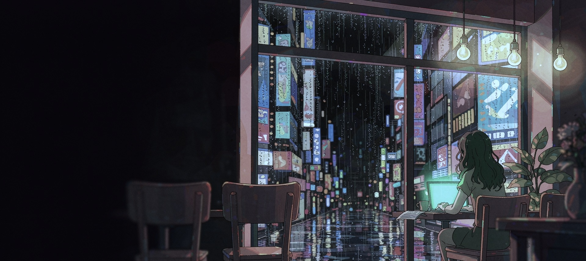

01
内容投放
Content & Operations
把素材做出来,也要把它投放出去并且说得清为什么有效。
- 素材侧全流程:命名规范、钩子拆解维度、跨渠道可迁移结论
- 数据复盘:点击 / 转化 / 消耗回流,提取高表现元素做二次裂变
- 口径边界:素材侧归因,不越界到投放策略层
CVR 40.8% vs 29%
GG 端 20–24%
31 件作品

我是邓晓桐,华南农业大学市场营销在读,做过游戏投放素材,也在用 AI 把想法变成画面。比起哪条片子跑得好,我更在意它为什么跑得好 —— 然后把那个原因,用到下一条素材上。
投放和 AI 出图看起来是两个岗位,但在我这里它们共用一套方法:先理解人为什么会被吸引, 再决定用什么方式做出来,最后用数据验证方向对不对。
把素材做出来,也要把它投放出去并且说得清为什么有效。
用 AI 把想法快速变成可看的画面,再用人的审美把它收回来。
下面这些是我负责的素材侧数据,来源为平台回流与项目后台记录。归因只做到素材层 —— 不把素材的效果说成投放策略的功劳。
点开文件夹,纸张会扇形展开;再点任意一张,就能在这里看视频或看大图,左右键可以在同一个文件夹里翻。 全部 51MB 素材都压在网页里,首屏只加载缩略图。
两段实习,两段学生组织经历。做的大多是从 0 到 1 的活:搭框架、写方案、把人叫来。 点卡片可以把它转到中间。
投放岗喜欢看"这人下班后在干什么"。这些是我真实在做的事,和作品里的方法有点关系。
从 2021 年起在微信运营韩团粉丝社群,自制活动链接与周边,在多个周边群和小红书同步铺开,单期活动曝光量 500+。
看了 8 年英雄联盟赛事,从 S 赛一路追到现在的正赛。对赛事节奏、选手梗、弹幕热梗和当下时事热点都很熟。
在迪卡侬做过一年多销售助理,已经离职。喜欢看人怎么在挑装备时做决定,也喜欢把货架上的动线拆开看。
喜欢拍城市边缘的空间:旧招牌、便利店灯箱、雨后的反光。站点的粉灰调就是从这类照片里长出来的。
关注 SLG 与 Roguelike 的钩子演进:战力对比、随机成长、割草爽感三条线怎么在不同渠道换皮。
习惯把看到的好案例拆成结构化笔记 —— 这直接变成了我后来做素材拆解的方法。
做饭是复盘数据之后最有效的重启方式。也会随手拍下餐桌配色,当作配色的灵感库。